Final Project
Click here if the video doesn't work!
After switching my final project idea about three times I finally settled on creating a clone of Apple's ipod.
Specifications
- ESP32-S3-WROOM Module
- MAX98357A Class D I2S Amplifier
- MCP73871T Battery Regulation IC
- Lithium Polymer Battery
- 32Gb MicroSD Card
- 128 x 64 SSD1309 I2C OLED Display
- USB Type C Port
- 3.5 mm Aux Jack
- Mono, 44100hz, 16-bit .wav Playback

Project Selection & Brainstorming
As someone interesting in decentralizing my tech, I wanted my final project to be a portable device that could replace some function of my phone. I also decided to avoid using libraries that abstracted audio playback since I wanted to understand exactly what my code is doing (and because it's funner to program things yourself). I ultimately wanted to create a custom PCB as well.
At the start of the year, I planned on create an ESP32 powered digicam. However, after completing the week 4 assignment, I realized that this project would be a little too simple with the ESP32-CAM. Then I pivoted to a DJ controller, which I thought would be an interesting introduction to microcontroller audio and signal processing (and I thought DJing was pretty cool at the time). As the final project deadline was coming closer and closer, I realized that I'd have to buy over $60 worth of fancy rotary encoders, slide potentiometers, and tactile buttons ontop of having to figuring out how to code all the fancy features of a DJ mixer and designing a PCB within a month.
Around this time, my brother e-waste dumpster dived an old ipod nano and installed custom software on it (Rockbox) which I thought was pretty sick. The whole idea behind the digicam was to find a way for me to use my phone less, and with how much I listen to music, an ipod would be a pretty cool everyday carry. However, ipods are surprisingly expensive if you're unwilling to go dumpster diving, so I figured that creating an ipod would be a perfect (and potentially useful) final project.
This pivot also meant that my project was much more feasible in the given time frame. At this point, I already had a decent wav player made and I knew that I could recreate the iconic capacitive touch wheel on the ipods utilizing the touch pins on the ESP32-S3 and some fancy software. I'd rather scale back a bit end up with an unfinished project!
Minimum Viable Project

Before MVP week, I was still planning on creating a DJ mixer from scratch. My minimum viable project was a simple .wav player with a TFT screen and potentiometer.
Transforming my MVP to an actual ipod was pretty straightforward—replace the rotary encoder with a capacitive sensor wheel and create an actual UI.
A couple of weeks after MVP week I began to seriously reconsider whether I wanted to continue making a DJ mixer as I looked at my eye-watering $63 dollar digikey cart full of parts that I likely wouldn't use after this project. With about a month to program the DJ software (which I had no idea whether the ESP32-S3 could support), construct a PCB, AND actually learn how to DJ, I was seriously doubting whether I could actually finish this project.
Even if it hurt my ego, I though that it would be best if I pivoted to an extension of my mvp: an ipod.
Design Process: Prototyping

The hardware necessary to play audio at "good enough" quality is actually quite simple. An ESP32, microSD card module, and I2S amp is really all I needed to play 16 bit PCM, 44100hz sample rate, mono .wav files. With the left and right audio samples interleaved, stereo audio can be achieved by connecting another mono amp and designating which sample each amp should play by supplying a specific voltage to a specific pin (I believe this process is called "hardware strapping"?). However, I quickly encountered a problem: 2 amplifiers means two negative terminals but wired earbuds only have one ground terminal. However, after some testing and reading, I learned that this was a problem that couldn't be solved without some extra hardware.

My .wav player prototype esentially had the same components as my mvp, excluding the rotary encoder
I also discovered that I'd have to significantly lower the output volume of the amplifier if I wanted to use headphones. Simply lowering the value of each sample exarcerbated the noise of the circuitry, so I resulted to a trusty voltage divider.
I also decided it was time to upgrade my solderless breadboard circuit to a soldered breadboard for more confident debugging and to have something to show at the project fair in case my PCB didn't arrive in time (it didn't arrive in time).
I was able to perfect the capacitive wheel, which was the most tricky component of the project, after three iterations. Testing out different shapes and spacings ensured that the core component of my ipod would feel smooth and intuitive to use. Learn more about how I was able to quickly iterate on custom pcbs on my CNC week documentation.

At this stage, I also looked into possible ways to reduce the noisyness of the amplifier through decoupling capacitors, low-value resistors, and increasing the distance between signal lines.

An absolute mess, this is why we need PCBs
It definetly worked though! A solid prototype allowed me to perfect my code knowing that hardware issues were unlikely even before the PCB arrived.
I even made a demo video for it.
Click here if the video doesn't work!
Design Process: PCB Design
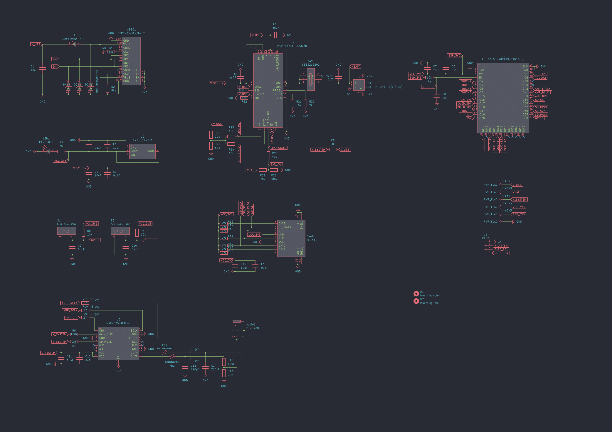I designed my PCB with KiCad by looking through online guides and manufacturer datasheets. Despite this being the second PCB I've made, the process was actually not that bad considering the resources I had access to.
Microcontroller
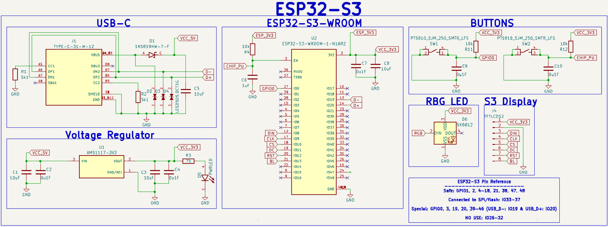Schematic I based my design off of
I began by integrating my ESP32-S3 devkit by using an ESP32-S3-WROOM module. I decided not to go the SoC route since this was my first time working with ESP32s and there are a LOT of things I could easily mess up. I followed this extremely helpful blog post.
Amplifier
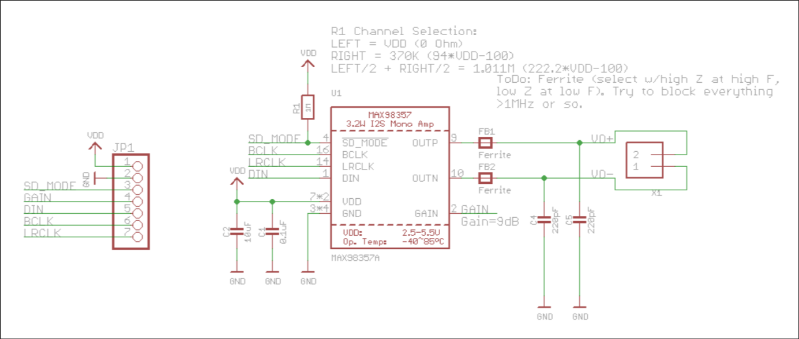Thank you Adafruit!
Integrating a MAX98357 amplifier was straightforward since Adafruit shares the schematic to their breakout boards. I looked through the datasheet to make sure I didn't miss anything and decided to include ferrite beads even though they were probably unecessary. I made sure to leave ample space between the signal lines (about 3 traces width), but theres still some noise in the system.
3.5mm Jack
1. Sleeve contact 2. Tip contact 3. Ring contact
After integrating the amp, the next thing I had to worry about was the 3.5mm aux jack. These seemed confusing at first, but they're actually quite simple. Connecting the ring and tip of the jack to the postive terminal of the amp and connecting the sleeve to the negative terminal was all I needed to do.
MicroSD card
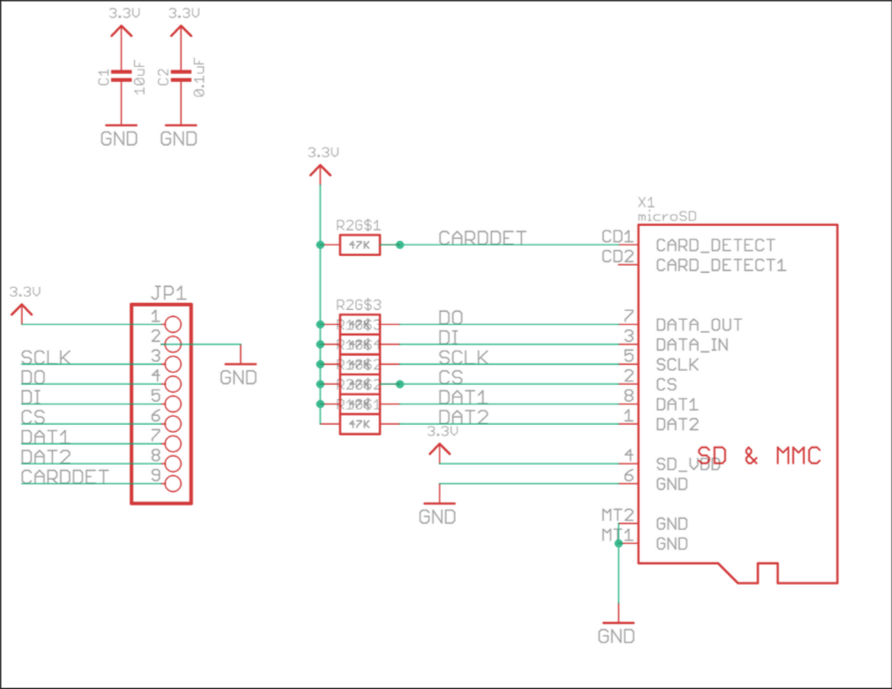Thank you once again Adafruit!
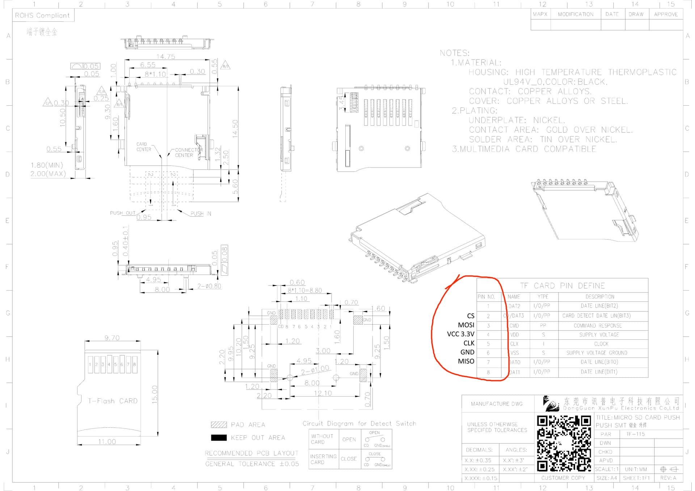Useful annotated datasheet from forum post showing which SD card terminal corresponds to which SPI pin
It's also surprisingly straightforward to connect a SD card to a microcontroller through SPI. Pullup resistors, like the ones on Adafruit and my schematic, aren't even necessary. I learned it's possible to directly wire an SD card to a microcontroller with some wire and solder, which is useful if you accidently burn the pins on your SD card module like I did.
Battery Management
I decided to use the MCP73871 IC (integrated circuit) since it supports simultaneous battery charging and powering, a feature called "load sharing". The MCP73871 can power a device directly from USB power while charging the battery (also wtih USB power) reducing stress on the battery. Battery regulation ICs without load sharing risk damaging the battery. I felt like the extra 50 cents for load sharing were probably worth it.
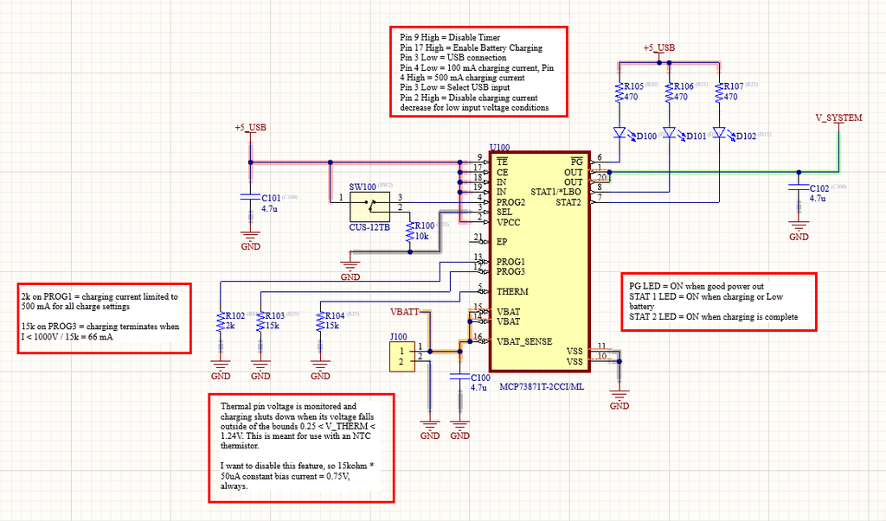This was by far the most intimidating part of the process since messing this up could render my PCB useless (as in, it can't get any power from USB or battery) or damage a lithium ion battery. With no tried and true breakout board to rely I, I very closely read the chip's datasheet and followed an instructables guide.
However, it works very nicely. I can see when my device is being powered by the battery or USB.

OLED Display
The datasheet on Amazon for my OLED with dimensions for mounting holes is completely wrong! Luckily I noticed this and designed a footprint that worked.
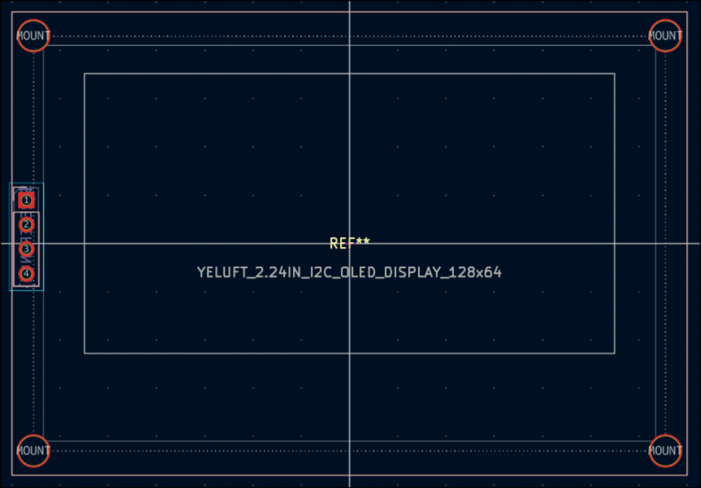Incorrect datasheets are evil.
Pitfalls/Accidents
To my surprise, the PCB works! However, there are a couple slight issues that don't necessarily hinder the operation of the wav player but I feel are important to point out.
- I did a lot of setup to be able to extract information about the battery (charging status, battery level) but I forgot to hook up the pins to the microcontroller.
- The switch to cut off the battery doesn't work. Now you have to unscrew the case and unplug the battery to fully shut it off.
- The indicator LED is waaay to bright. A 75 ohm resistor was not enough.
A bit about JLCPCB...
Setting up proper board constraints can save future you a lot of headache. Heres my pretty generous setup that has worked well:
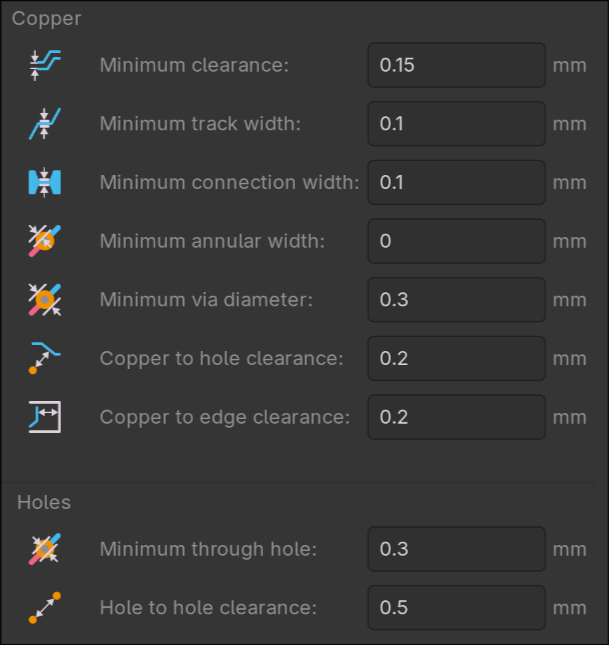 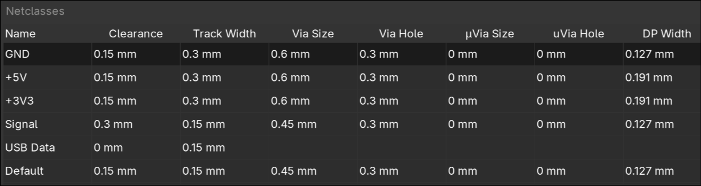 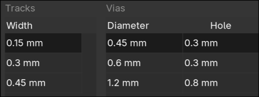Two KiCad plugins that saved me a lot of time:
- Impart GUI → import symbols and footprints from JLCPCB/EasyEDA
- kicad-jlcpcb-tools → quickly generate the files necessary for JLCPCB manufacturing (gerbers, BOM, part placement)
And most importantly...
Make sure to double quadruple check the orientation of your ICs before assembly! I was very close to having my MAX98357A misaligned by 90 degrees, which would have rendered my entire PCB useless.
Images:
Here's the schematic, which describes what should be connected to what.
You'll see some similarities between my schematic and the references above
Here's the PCB layout:

Here's the 3D render on Kicad:

And finally, what the PCB actually looks like:
Design Process: Programming
Some terminology before we begin...
- Sample: A number representing the amplitude of an audio wave at a given time. The larger the sample size (ie. 16-bit PCM) the higher quality the audio. I used 16 bit samples, meaning I could get amplitudes from -32,768 to +32,767.
- Frame: Two samples where one of the samples goes to the left ear and the other sample goes to the right ear. I have this as a struct.
To prevent the code for my ipod from being in one massive unorganize file, I ended up migrating to platformio and tried to make my program as modular as possible. I made extensive use of macros to ensure that I could easily tweak certain aspects of my ipod. I also needed to keep optimization in mind since the ESP32s have limited resources. Yes, I know I used String objects which aren't the most optimal for memory conservation but man they are so easy to work with.
Cacheing
size_t Wav_File::read_frames(Frame_t *frames, size_t num_frames) {
size_t frames_read = 0;
for (uint32_t i = 0; i < num_frames; i++) {
if (wav_file.available() == 0) {
is_empty = true;
}
if (cache.pos_tag + 1 >= cache.end_tag) {
fill_cache();
}
if (cache.pos_tag + 1 >= cache.end_tag) {
break;
}
uint8_t low = cache.cbuf[cache.pos_tag - cache.start_tag];
uint8_t high = cache.cbuf[cache.pos_tag - cache.start_tag + 1];
frames[i].left = (int16_t)(high << 8 | low) * (constrain(0, volume, 100) / 100.0f);
cache.pos_tag += 2;
if (num_of_chan == 1) {
frames[i].right = frames[i].left;
} else {
low = cache.cbuf[cache.pos_tag - cache.start_tag];
high = cache.cbuf[cache.pos_tag - cache.start_tag + 1];
frames[i].right = (int16_t)(high << 8 | low) * (constrain(0, volume, 100) / 100.0f);
cache.pos_tag += 2;
}
frames_read += 1;
}
return frames_read;
}
My read_frames() function that supplies stereo/mono samples
Audio streaming through I2S requires a constant stream of samples read directly from the wav file. By applying what I learned about cacheing through CS61, I created a wav file class that would be able be able to supply a constant stream of samples while minimizing expensive File.read() calls.
Writing to I2S amplifier
size_t bytes_written;
i2s_write(output->i2s_port,
(const char*)frames,
frames_read * sizeof(Frame_t),
&bytes_written,
portMAX_DELAY);
Really easy to write to my amp. We even write in 512 byte chunks!
Following example code from this useful youtube video and the corresponding github repository I set up I2S streaming via a FreeRTOS task. If you asked me how tasks worked I probably wouldn't be able to explain it, but writing to my I2S amp was as simple as calling i2s_write(). To create pausing, we simply yield the task before actually sending any samples to the amp. Selecting songs is as simple as changing which wav_file we are freading frames from.
Capacitive sensors
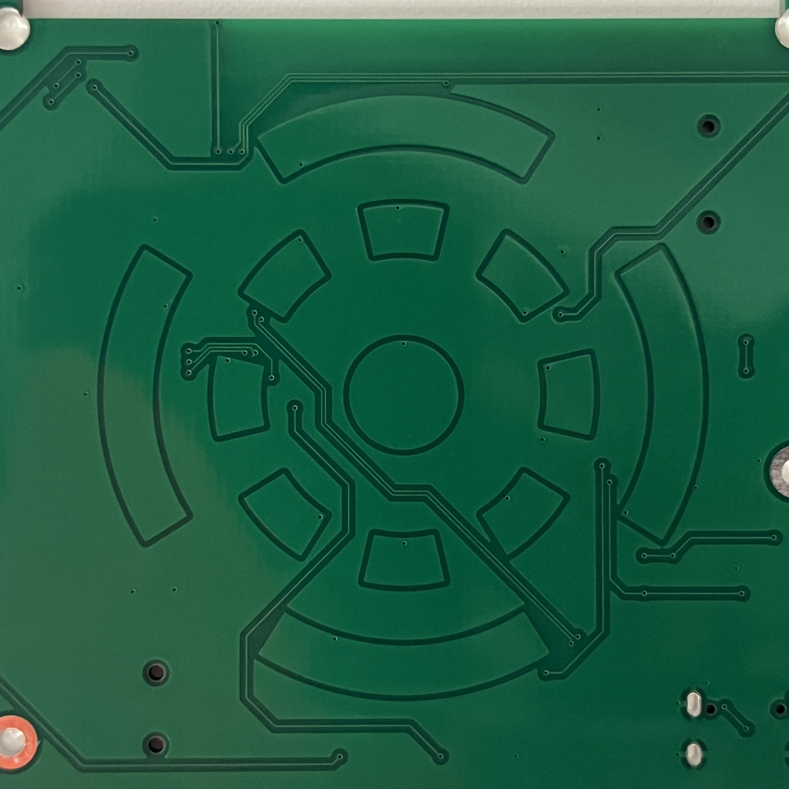
Each pad on my touch wheel is just a capacitive sensor. By preforming a analogRead() and checking whether the read value is above a certain threshold, I can see whether someone's finger is touching a pad.
- The wheel increments or decrements a value when a segment is pressed and its adjascent segments is also pressed within a certain time window.
- Swipe controls work by checking whether the center capacitive sensor is touched and then one of the four outer rings are touched within a certain time window.
- The center "button" works by checking whether the center capacitive sensor has been touched for a certain amount of time (in order to not interfere with swipings).
if (btn_pressed != btn_last && (now - btn_time) > BTN_DEBOUNCE) {
btn_last = btn_pressed;
btn_time = now;
if (btn_pressed) {
output->paused = !output->paused;
}
}
Debouncing really helped the controls feel smooth
By experimenting with timing, sensor sensitivity, and debouncing, I was able to get the swipe controls working reasonably well. There are definetly difficulties with sensor detection on quick movements or partial touching, but the ipod is functional.
// --- Touch sensors ---
#define NUM_SENSORS 13
#define STORE_MS 70 // How long to store wheel state
#define HOLD_MS 200 // How long to register button press
#define SWIPE_MS 200 // How long to register button swipe
#define BTN_DEBOUNCE 50
#define SWP_DEBOUNCE 50
Macros used to tune wheel settings.
User Interface
// Song artist and playlist
u8g2->setFont(u8g2_font_smallsimple_tr);
u8g2->drawStr(0, 40, ("by " + cur_track->artist).c_str());
u8g2->drawStr(0, 50, ("in " + cur_playlist->name).c_str());
u8g2->drawStr(0, 60, (String(volume / 2) + " db").c_str());
Simple code used to display artist, playlist, and volume. Decibels (only accurate on headphones) were calculated with reference to my airpods.
I created a simple user interface that makes use of u8g2 fonts. Everything is a font element, even the icon. I choose the text-ui aesthetic for coolness factor and simplicity.
Inside the song selection menu, spinning the wheel changes the selected song and swiping changes the current playlist. Holding down the button selects the song.
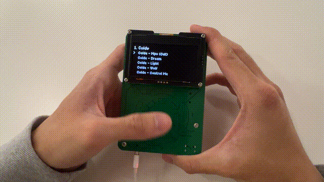During playback, spinning the wheel changes volume. Swiping horizontal switches songs. Swiping vertically opens the menu. Holdinging down the button toggles pausing. I also decided to include some statistics about the current .wav file being played to fill up some empty space. I included some text indicating whether it's being powered by battery or USB to display the MCP73871T's load-sharing capabilities.
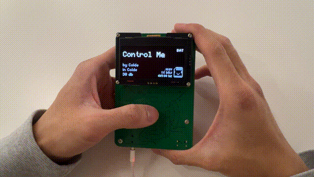Design Process: Enclosure
I created the enclosure for both the prototype and PCB using tinted laser cut acrylic. Following the same process I did during box making and my kinetic sculpture, I used Onshape to design and generate DXFs which I brough to Rhino for post processing. I think it turned out very nicely!

Laser engraved acrylic just looks so cool
Bill of Materials
Here's the bill of materials for the PCB:
| Count | JLCPCB # | Part | Model | Cost Per | Type |
|---|---|---|---|---|---|
| 1 | C910544 | I2S Amp | MAX98357AETE+T | $1.20 | Extended |
| 1 | C2913205 | Microcontroller module | ESP32-S3-WROOM-1-N16R2 | $5.13 | Extended |
| 1 | C165948 | Usb type c port | TYPE-C-31-M-12 | $0.17 | Extended |
| 1 | C6186 | Voltage regulator | AMS1117-3.3 | $0.16 | Basic |
| 1 | C82544 | Diode on voltage regulator | 1N5819HW-7-F | $0.02 | Extended |
| 3 | C5199850 | Smaller diode on voltage regulator | LESD5D5.0CT1G | $0.01 | Extended |
| 2 | C720477 | Tactile button | TS-1088-AR02016 | $0.04 | Basic |
| 2 | C88989 | Ferrite bead for amp | BLM18SG331TN1D | $0.03 | Extended |
| 1 | C18594 | 3.5mm jack | PJ-320BSurface Mount | $0.05 | Extended |
| 1 | C266620 | MicroSD card reader | TF-115 | $0.13 | Extended |
| 1 | C511310 | Battery regulation chip | MCP73871T-2CCI/ML | $1.19 | Extended |
| 1 | C295747 | JST connector for lipo | S2B-PH-SM4-TB(LF)(SN) | $0.18 | Extended |
| 1 | C2286 | Indicator LED | KT-0603R | $0.01 | Basic |
| 1 | C115375 | Switch | SSSS213202 | $0.40 | Extended |
| 6 | C96446 | 10uF Capacitor | CL10A106MA8NRNC | $0.01 | Basic |
| 7 | C14663 | 0.1uF (100nF) Capacitor | CC0603KRX7R9BB104 | $0.01 | Basic |
| 2 | C1603 | 220pF Capacitor | CL10B221KB8NNNC | $0.01 | Basic |
| 3 | C19666 | 4u7F Capacitor | CL10A475KO8NNNC | $0.01 | Basic |
| 2 | C23186 | 5.1k resistor | 0603WAF5101T5E | $0.01 | Basic |
| 1 | C4275 | 75 resistor | 0603WAF750JT5E | $0.01 | Basic |
| 3 | C25804 | 10k resistor | 0603WAF1002T5E | $0.01 | Basic |
| 1 | C22935 | 1M resistor | 0603WAF1004T5E | $0.01 | Basic |
| 3 | C25803 | 100k resistor | 0603WAF1003T5E | $0.01 | Basic |
| 3 | C25190 | 27 resistor | 0603WAF270JT5E | $0.01 | Basic |
| 3 | C4184 | 20k resistor | 0603WAF2002T5E | $0.01 | Basic |
| 7 | C25819 | 47k resistor | 0603WAF4702T5E | $0.01 | Basic |
| 1 | C22975 | 2k resistor | 0603WAF2001T5E | $0.01 | Basic |
| 1 | C22809 | 15k resistor | 0603WAF1502T5E | $0.01 | Basic |
| 1 | C23196 | 50k resistor, using 51k | 0603WAF5102T5E | $0.01 | Basic |
Besides that, I had to buy an 128x64 I2C OLED display and lipo battery with a JST cable.
If you want to make your own...
All of the necessary manufacturing files (gerber, BOM, part placement) and the KiCad project can be found on this github repository. The jlcpcb/production_files has everything necessary for jlc to assembly the pcb.
Remember to properly align the ICs so that the dots on the MAX98357A and MCP73871 point down and towards each other, the generated alignment is NOT correct. The default JLCPCB manufacturing settings should be fine but make sure you assemble the back. Some hand soldering for the screen will be necessary. It cost me $8.80 to get the PCBs made, $103.65 for assembly and parts, $50.59 for expedited (1 week) shipping, and $46.11 from tariffs.
All of code for this project can be found on this github repository. Be warned, it is not very pretty. Look at the src directory to find the actualy c++ files. Their corresponding header files can be found in the include directory.
Image gallery


Close ups:


Demos
Reflection
I'm really happy with how my final project turned out. I had a lot of fun designing and programming it, even if deadlines were bit tight. Having never touched a microcontroller before this class, I'm satisfied with the progress I've made. This is also the second ever PCB I've made, but I feel like my process has been much more streamlined. Editing the video was also fun (a little too fun since I should probably be studying for finals!).
If I continue working on this design in the future, I'd definetly try to figure out how to get stereo audio and reduce all noise from the amplifier. I'd also like to get more song information like duration and be able to upload music from a webserver. An integrated screen, black PCB, and silkscreen are also on my bucket list.